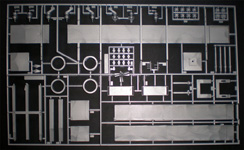

|

Revell 1/25 Automobile Transport Trailer
Kit #1509 MSRP $39.95 $30.00 from Roll Models
Images and text Copyright © 2015 by Matt Swan
Developmental Background
As America's love affair with the automobile blossomed the need to transport new and used vehicles from manufactures to distributors grew quickly. The trucking and rail industries created transport trailers both enclosed and open double deck units to fill this need. These were not only employed by the new car industry but by car owners who are relocating and choose to ship their cars instead of driving, as well as consumers who have just purchased a vehicle on the second-hand market and need it delivered to their location. An American commercial car carrier typically fits between 5 and 9 cars, depending on the car size and trailer model and usually has a weight cap of 80,000 pounds. Open commercial car carrier trailers typically have a double-decker design, with both decks subdivided into a number of loading and storage ramps that can be tilted and lifted independently of one another with hydraulics. The trailer hydraulics allow the ramps to be aligned on a slope so cars can be driven up and secured to the ramp floor with chains, tie-down ratchets or wheel straps, after which the ramp can be tilted in any direction to optimize stacking.
The Kit
For the entire first half of 2015 this kit was listed as a future release from Revell with actual release date pushed back more than once. By June 1, 2015 it had finally hit store shelves with the manufacture hype being that it was all new tooling and new decals. Now I have never seen the original 2004 issue of this kit so cannot comment on what, if any parts were actually retooled or how the original decals looked. In the 2015 issue I can tell you we have 145 parts in high pressure light grey injection molding over 5 sprues along with 10 vinyl tires and a bag of chain and tubing. The tires look great with absolutely no flash which is pretty big in my book as I hate cleaning flash off vinyl tires with a passion. The plastic parts demonstrate nice surface detail, especially the diamond tread on the tire ramps but all pieces have a fairly pronounced mold separation seam and mild levels of flash. It seems to me this should not be the case with a newly retooled kit from such a main-line manufacture. Additionally I have found several alignment pins that were short shot in the casting process along with alignment holes that were either flashed over or completely filled and just in case you are wondering, none of the filled holes correspond to the short shot pins. All of this is easily dealt with (though somewhat time consuming)as long as the modeler is paying good attention and test fitting parts. There exists a multitude of injector pin markings on the B side of things and while those B sides are all inside the structure with it being an open structure they still all need to be cleaned up. You can view the instructions here.

You may click on these small images to view larger pictures

Construction
I thought I would approach this build a little differently (for me) and go right to step #1 rather than skipping around. Assembling the main chassis frame prior to paint seems easy at first glance but cleaning up all those mold separation seams took all day and looking forward to the rest of the build I cringe at all the clean-up work in my immediate future.
Painting gloss can be challenging especially getting good coat density over sharp corners and edges. Laying down a consistent flat primer coat can help a lot but still getting color density can result in some pretty thick layers of paint. I chose to use flat red as my primer resulting in only one coat of thinned gloss Italian Red to get good color density across the framework. I guess I could have used a rust red primer but I had lots of Testors flat red on hand and I like to use what is lying around before buying more supplies. All the loading ramps and wheel hubs were first coated with Krylon gloss black on the sprues. Once dry I removed then, cleaned up the sprue gates and flash then touched up the black base coat. For my metallic I like to use Alclad so everywhere I talk about a metallic paint from here on out I am referring to Alclad paint. The ramps are all done with aluminum and the wheel hubs are all done with chrome. The leaf springs are done with Testors flat black and some gray support beams are done with Model Master dark gull gray.
|


{kind=link}
{kind=link}
{kind=link}
{kind=link}
{kind=link}
{kind=link}
{kind=link}